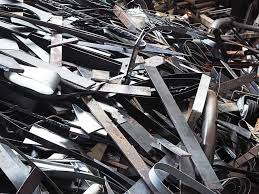
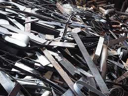

Your Waste Material is Metal.
 

Metal waste, such as aluminum cans, steel scraps, and old appliances, does not break down naturally and can remain in the environment for centuries. If not disposed of properly, metal waste can contribute to pollution, take up space in landfills, and lead to the unnecessary mining of raw materials. Some metals can also rust and release harmful substances into the soil and water.
Recycling metal is the best way to manage waste and conserve resources. Metals can be melted down and reused multiple times without losing quality. Proper recycling reduces landfill waste, saves energy, and decreases the need for mining, helping to protect the environment and preserve natural resources.
Back To Home Page